文字
背景
行間

カテゴリ:学校行事
 令校5年 入学式・校章贈呈式
令校5年 入学式・校章贈呈式
その後の校章贈呈式では、佐倉高校同窓会である鹿山会の会長より、校章の贈呈があり挨拶もいただきました。
音楽部の校歌披露や吹奏楽部の入退場曲演奏、写真部の撮影など、在校生の協力もあり素晴らしい式となりました。
新入生の皆さんも、初めは緊張していましたが、式後のホームルームでは笑顔あふれる教室風景が見られました。
来週から新しい環境での生活が始まります。佐倉高校の校訓である「質実剛健、積極進取、独立自尊」を忘れずに日々の活動に取り組んでもらえればと思います。


 第75回卒業証書授与式
第75回卒業証書授与式


 令和4年度 入学式・校章贈呈式
令和4年度 入学式・校章贈呈式
敷地内に咲く満開の桜に囲まれて、令和4年度千葉県立佐倉高等学校入学式が挙行されました。
新入生は、式開始前に、日程の式の流れの確認等を行いました。
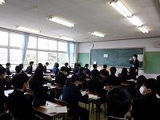
[担任の先生の名前やクラスメートの名前は覚えられましたか？]
[新入生も緊張していますが、担任の先生も緊張していますよ]
今年度も昨年度に引き続き、新型コロナウイルス感染症の対策を万全に行い実施されました。
各クラスの呼名が終了し、校長より、普通科280名、理数科40名、計320名の入学が許可されました。
また、校長より、「高度情報化社会に活躍する人材となるよう、普段の学習を大切にすること、成人年齢が18歳へ引き下げられる法律が施行されたため、３年間の学校生活で成人としての準備をして欲しい」との言葉をいただきました。
それぞれの目標に向かって取り組んで欲しいと思います。
その後の校章贈呈式では、佐倉高校同窓会である鹿山会の会長より校章が贈呈され、新入生にも挨拶をいただきました。
生徒に渡されたのは、藩校から数えて、230年の伝統ある、佐倉高校の校章です。
会長からは、ご祝辞と佐倉高校の歴史、鹿山会の紹介をしていただきました。
新入生は、明日より新たな環境での生活が開始されます。学習や行事などの学校生活の大きな期待と少しの不安もあるかと思いますが、新入生の皆さんには、佐倉高校の校訓である、「質実剛健、積極進取、独立自尊」を忘れずに日々の活動に取り組んでもらえればと思います。
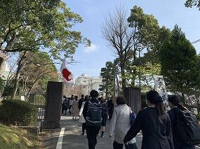 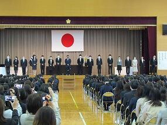
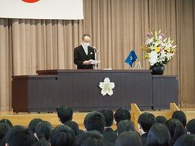 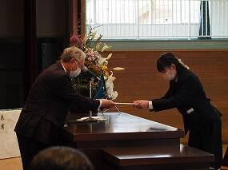
第73回卒業証書授与式
 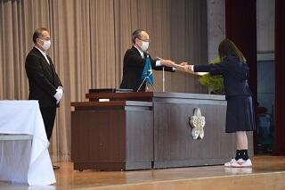
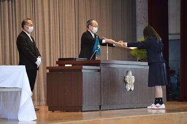


令和3年3月9日(火) 第73回卒業証書授与式が無事に挙行され、323名の卒業生を送り出しました。新型コロナウィルス感染症防止のため、在校生、保護者、同窓会や地域の方々にはご理解とご協力をいただき、心より感謝申し上げます。学校長からは「木は規に依って直く、人は人に依って賢し」という言葉が贈られ、情報化が進むこの時代に、ただ情報を受け取るだけでなく、多様な観点から、人と意見を交え、咀嚼し考えていくことが大切だと述べられました。また、「学びて思わざれば即ち罔（くら）し」という言葉とともに自分で考えることの大切さ、人の教えを受けることの大切さを述べられ、上級学校においても「良き学び」を続けてほしいというメッセージが贈られました。生徒代表として第７２代生徒会長からは「大学入試の大きな変革があったこの大変な年にコロナ禍に見舞われ、休校・学校行事の中止、部活動の最後の大会の中止など、様々な困難を経験してきた自分たちには、これからの困難を乗り切る力がある」という言葉とともに、3年間を共に過ごした仲間や先生たちへの感謝を込めた熱いメッセージが贈られました。
３２３名の卒業生のみなさんの今後のご活躍とご多幸を心よりお祈りいたします。
第２学年進学講演会を開催
２月４日（火）の６，７限で、進学講演会を行いました。今年で最後となった大学入試センター試験の結果、難関国立１０大学の動向などについて、駿台予備学校津田沼校の時田珠里校舎長をお迎えして御講演いただきました。
県立移管120周年記念式典挙行
当日は、1、2限の授業公開の後、11:00からの生徒主体のプレセレモニーが実施されました。プレセレモニーでは、音楽部・音楽選択者の合唱、ダンス同好会によるダンスパフォーマンス、吹奏楽部の演奏が披露され、生徒やご招待者の皆様を大いに沸かせました。
午後からの記念式典では、澤川千葉県教育委員会教育長、堀田鹿山会名誉顧問、西田佐倉市長、茅野佐倉市教育委員会教育長、佐藤千葉県高等学校長協会会長、近隣学校関係者様をご来賓にお迎えし、歴代の校長先生、鹿山会関係者、PTA関係者、旧職員の皆様のご臨席のもと、盛大に挙行されました。旧制中学校、現校旗の入場から始まり、国歌斉唱、校長式辞、実行委員長・PTA会長・生徒会長の御挨拶があり、来賓祝辞、新校旗の贈呈式、実行委員会からの感謝状の贈呈と県教育委員会からの感謝状贈呈と続きました。御来賓紹介時に、残念ながら来校はかないませんでしたが、長嶋茂雄様から頂いた御祝辞を代読させていただきました。記念式典がより一層華やいだものとなりました。式典最後の、全校生徒による校歌斉唱は、大変素晴らしいものでした。
式典後、記念講演とし千葉工業大学未来ロボット技術研究センター所長 古田貴之様から、ロボット技術と未来社会の演台でご講演いただきました。生徒の心を巧に捉え、未来社会を予感させる内容であっという間の８０分でした。
学校説明会その２


学校説明会その１


夏季休業前全校集会
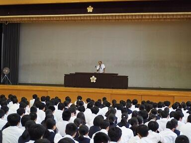


教職員_不祥事防止研修
 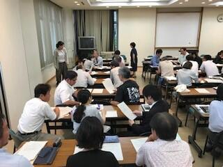
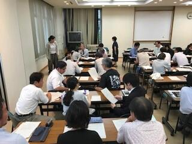 生徒会役員選挙
 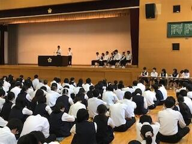
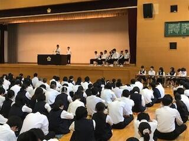

生徒総会・賞状伝達式・カヌー部壮行会
６月４日午後体育館にて生徒総会・賞状伝達式・カヌー部壮行会が行われました。
生徒総会では、前年度の活動報告・決算、今年度の活動予定や予算審議が行われ議事が滞りなく終了しました。生徒からの要望も可決され、学校に伝えられることになりました。その後、賞状伝達（カヌー部、弓道部、将棋部）が行われました。最後に関東大会に出場するカヌー部に対して壮行会が行われ、応援団から熱いエールが送られました。
（祝カヌー部関東大会・インターハイ出場決定！）


エピペン・ＡＥＤ研修会

PTA総会 進路講演会
総会後は、全体での「進路講演会」の後、場所を変えて年次別に進路講演会が行われました。進路指導部職員の他、駿台千葉校の講師の方もお招きして、「受験生の保護者として知っておいてもらいたいこと」、「高大接続改革に伴う大学入学共通テストや英語の民間の検定試験などの導入」などについて詳しい説明がありました。


教育プラットフォーム研修（教育支援ソフト研修）

離退任式が行われました


対面式が行われました。
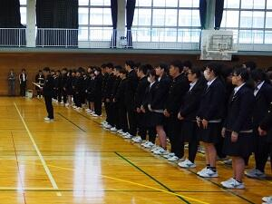
入学式が挙行されました
続いて校章贈呈式が行われ、本校同窓会鹿山会会長より校章が贈呈されました。
（写真は本校写真部が撮影）


着任式・始業式が行われました
卓球部、書道部の賞状披露も行われました。

第７１回卒業証書授与式
PTA会長様、同窓会長様を始め１４名の御来賓の皆様に御臨席賜り、厳粛かつ温かな雰囲気の中で式は進められました。卒業生の式でのふるまいは、３年間の高校生活の充実度が伝わるものでした。卒業生の今後の御活躍を祈念いたします。
（写真は本校写真部が撮影）
修学旅行結団式
明日から２年生は、奈良・京都方面に３泊４日の修学旅行に出かけます。
（左 結団式の様子 右 荷物搬入の様子）


救命講習会
大学模擬授業
学校説明会２日目を開催しました。
次回は、平成３０年１０月２７日（土）に授業公開と学校説明会を実施する予定です。中学校３年生の皆さん、ぜひいらしてください。

学校説明会を実施しました。明日も行います。
生徒会選挙が行われる
平成３０年７月３日（火）６・７時間目に第７１回千葉県立佐倉高等学校生徒会選挙立ち会い演説会及び投票が行われました。体育館の気温は上がる一方でしたが、それを上回る熱のこもった立候補者と推薦者の演説が体育館に響き渡りました。ある生徒は全校生徒をうなづかせ、ある生徒は歓声を上げさせつつ、自分の主張を伝えました。投票の結果はどうあれ、すばらしい演説会でした。

こちらも御覧ください → 校長花ごよみ
地域交流懇談会（１０００か所ミニ集会）
最初に、本校校長が学校概況について説明し、出席された方々に本校の取組や生徒の様子等について御理解いただきました。
協議では、地域の方から、生徒の通学に関すること、本校の施設等に関することについて御意見をいただきました。また、防災に関することについて佐倉市危機管理室の方にお話しいただき、地域との連携、本校が避難所になったときの対応、生徒が通学途中で地震に遭ったときの対応等について、意見交換を行いました。
壮行会が行われる！
平成３０年６月6日（水）７時間目に体育館で壮行会が行われました。
６月９日（土）・１０日（日）に精進湖カヌー競技場（山梨県）で行われる関東高等学校カヌー大会に出場するカヌー部選手が紹介され、校長と生徒会長から激励の言葉が送られました。選手代表が大会に向けた抱負を述べた後、応援委員（ラグビー部中心）からエールと第一応援歌が送られました。

 カヌー部関東大会県予選報告 へ
カヌー部関東大会県予選報告 へ
生徒総会が行われました。
平成２９年度生徒会活動報告、各委員会活動報告、会計報告、平成３０年度生徒会活動計画、各委員会活動計画、予算案について審議され承認されました。また、部活動に関する提案があり審議の結果可決されました。

サイエンスダイアログ実施しました。
「サイエンスダイアログ」は、日本学術振興会主催で、世界各国から日本の大学･研究機関で研究している若手研究者を各学校に派遣し、自身の研究や自国の紹介を講義するプログラムです。本校では、理数科生徒を中心に年間数回実施しています。
4月23日（月）に理化学研究所で天然資源系薬学の研究を行っているDr. Eva KNOCHをお招きし、理数科3年生を対象に実施しました。植物が酵素を利用し有効成分を活用していることなどを講義するだけでなく、生徒の考えを聴きつつ導いてくれました。
また、スプラウトを用いたペーパークロマトグラフィを各グループごとに実施させ、生徒に自身の研究の一端を体験させてくれました。


４月１７日「佐倉を知る」を行いました
４月１７日（火）に、１学年行事『佐倉を知る』を行いました。本校、正門を出発して３つのコースに分かれ、歴史民俗博物館まで徒歩で歴史散策活動を行いました。歴史民俗博物館での見学も含めて、身近な地域の歴史や文化への理解を深めることができました。


入学式が挙行されました
普通科２８６名、理数科４０名の入学が許可されました。
式のあとに校章贈呈式が行われ、本校同窓会鹿山会会長より校章が贈呈されました。
（写真は本校写真部が撮影）


平成２９年度SSH・SGH合同課題研究発表会が開かれました。
平成３０年３月１９日（月）に多数の来賓・助言者の方々をお招きして「平成２９年度SSH・SGH合同課題研究発表会」を開催しました。
初めにSGH・SSHから各２チームの口頭発表を行いました。SGHは英語を用いた発表、SSHはPC技術を駆使したプレゼンと両者の特徴を上手く打ち出した口頭発表でした。その後SSHは体育館で理数科２年生がポスター発表を行い、SGHは第二体育館・多目的室等で口頭発表やポスター発表を行いました。次年度以降は両者の融合をより一層深めていきたいと思います。
 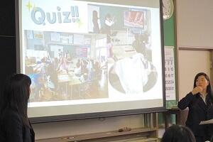
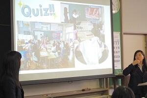
第７０回卒業証書授与式
普通科２８２名、理数科３８名が卒業しました。
（写真は本校写真部が撮影）


２年理数科海外研修に出発しました
１月１６日から２年理数科全員が海外研修でシンガポールに向かいました。成田空港ではＮＡＡ鹿山会の方々から激励を受け、元気に出発しました。
１７日午前中は Sea aquarium を訪ね、見学コースだけでなく、バックヤードの様子も視察する事が出来ました。また、忙しい研修の合間にシンガポールならではの施設も見学しました。
ホテルに戻ってからは、明日訪問する高校で行う課題研究の発表会に向けてプレゼン練習に励みました。


防災避難訓練実施
はじめに校舎からの出火を想定した第１グランドへの避難訓練。
その後、１学年は消火器体験、２学年は煙体験と分かれての防災体験を行いました。
消火器体験はオイルパンの炎を消火器噴射で消す実践的なもの。煙体験は白煙（無害）が充満して視界０となったテントの中をくぐり抜けるというもの。
いずれも火災への遭遇に備えた実のある体験となったようです。

学校説明会が行われました。
８月１日（火）、８月２日（水）に学校説明会が本校体育館で行われました。説明会では、本校の概要、入学者選抜、教育課程等に係る説明や、ＳＳＨ・ＳＧＨの取り組みの紹介の他に、音楽部による校歌披露等も行われました。ご来校いただきました皆様、ありがとうございました。
次回の説明会は１０月２８日に行われます。詳細はこちらをご覧ください。
地域交流懇談会（１０００か所ミニ集会）を開きました。
平成２９年６月２４日（土）午後２時４５分から本校地域交流施設で地域交流懇談会を開きました。
近隣自治会（町会）の方、地域の学校及び関係機関の方、保護者の方、本校開かれた学校づくり委員会委員の方、本校職員等、４４名が参加しました。
当日は、文化祭の公開日であり、参加者の多くの方に生徒の活動を見ていただきました。
会の始めに、本校校長が学校概況について説明し、出席された方々に本校の取組等について御理解いただきました。
地域の方、関係機関の方、保護者の方から、本校の施設等に関すること、地域との連携に関すること、本校生徒の印象や意識に関わること、本校に期待すること、防災に関することなどについて御意見をいただき、意見交換を行いました。
生徒総会が行われました
６月７日（水）に生徒総会が行われました。第一部では、昨年度の活動報告と収支決算報告、今年度の予算案の提案があり、承認されました。第二部では、代表生徒から提示された学校への要望事項について協議が行われました。
授業公開・PTA総会・進路講演会が行われました
また、授業後にＰＴＡ総会・進路講演会が行われました。
4月18日（火）千葉大学学長講演会
4月18日（火） 佐倉を知る
入学式を挙行しました。
普通科２８５名、理数科４０名の入学が許可されました。